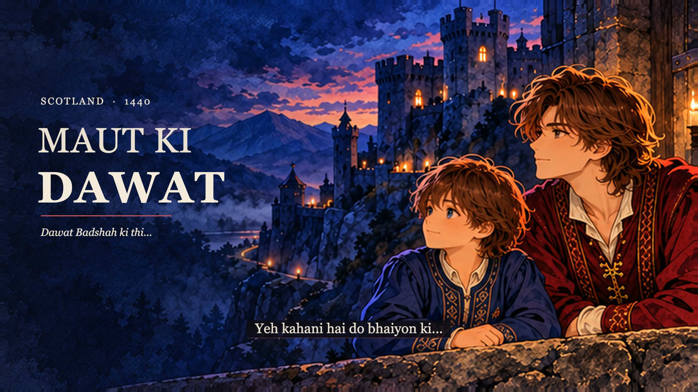
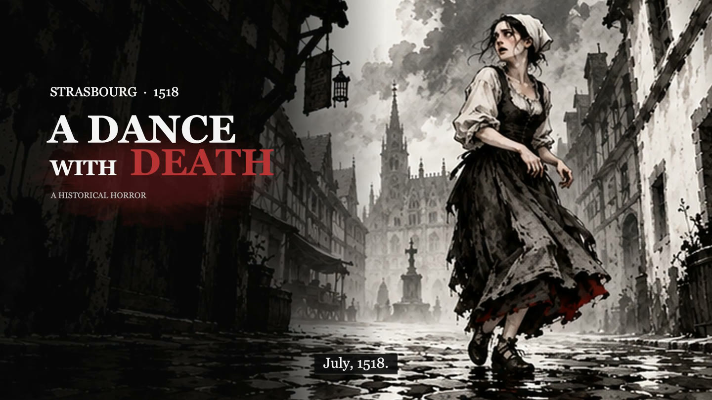
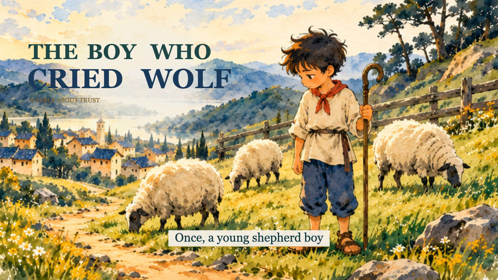

Find the story.
Choose the length, language and narrator, dialogue or both. Need help writing? Your assistant builds a hook, an engaging arc and an ending that lands.
FOR YOUTUBE AUTOMATION. BUILT FOR STORYTELLERS.
Give your channel an art style people remember. Turn an idea into a cinematic Sumi film, with emotion, character animation and sound that tells the story.
Your AI assistant. Your story. No video-generation API.



Real frames from the films below.
No stock footage. No
video-generation API.
THE SCREENING ROOM
Choose an art style. Watch a full demo.
Find the feeling your
channel needs.
The preview couldn’t load here. Download the MP4 to watch it.
THE ART BEHIND THE ANIMATION
Sumi-e is Japanese ink painting: expressive brushwork, tonal washes and space that lets a subject breathe. Beyondsumi brings that spirit into cinematic storytelling through painted scenes, character performance and carefully directed motion.
Original carries a painted Sumi Anime feeling. Light brings colour and clarity. Dark leans into bold ink, red accents and dramatic camera work. The palette, atmosphere and direction follow your story.
Explore the ink-painting tradition ↗YOU BRING THE IDEA. THE ASSISTANT HELPS DIRECT IT.
Start with an idea, a finished story
or your own recorded
narration.
Choose the length, language and narrator, dialogue or both. Need help writing? Your assistant builds a hook, an engaging arc and an ending that lands.
Review the script, scenes, characters, camera and sound. Approve a clear direction before the artwork and animation begin.
Prepare coherent artwork and connected action poses. Animate expressions, movement, weather, light and atmosphere in the chosen style.
Sync narration, music and material SFX. Review the film, then receive the HD MP4, editable files and your branded dashboard.
KEEP THE CREATIVITY. SKIP THE VIDEO API BILL.
Beyondsumi animates prepared artwork and reusable action states locally. It doesn’t pay a video-generation model for every clip. The music themes, composer and sound engine are already yours to use.
THE OPTIONAL VECTOR ROUTE
Choose SVG and your assistant can author complete vector scenes, character states, atmosphere, captions and camera movement. The local renderer brings them together with sound.
Use it when you want a self-contained graphic treatment or don’t have an image model. Painted model artwork can carry richer detail; the choice stays yours.
THE BEYONDSUMI SOUND LAB
A drum builds. A footstep lands.
A room falls quiet. Every
sound has a job.
An 18-second excerpt from the bundled Wonder theme.
Existing compositions, previewed here. No music-generation API.Tender, love, grief, hope, wonder, journey, documentary, mystery, suspense, dread, battle and resolve—with editable parts and scores.
Your assistant reads the story and plans the mood, setting and important contacts. The local composer, synthesizer and mixer build the sound from that plan.
Give every scene a sound plan. Sync important impacts and footsteps, keep dialogue clear, and make a drum stop matter by hearing the drums first.
Reuse suitable saved sounds or choose Python-only. Optional ElevenLabs sound generation can add a missing effect after you approve it.
THE VOICE IS YOUR CHOICE
Music, ambience, action SFX and readable story captions carry the film. Speaking characters can use lip-sync to their final dialogue. Story-language support comes from your assistant; narration-language support depends on the chosen model. Hindi, Urdu, Arabic and English are examples—check the selected voice route. Voicebox’s engines do not all cover 80+ languages.
YES, YOUR FILM HAS ITS OWN HOME.
Watch. Download the real HD MP4. See available editions. Ask your own agent to recreate another style.
Try the demo dashboard ↗A static dashboard prepares requests; it doesn’t secretly start production. Your generated local dashboard works while its local server runs.
START HERE. NO ANIMATION EXPERIENCE NEEDED.
Download the tool, choose the guide for your assistant, and paste the request below. Beyondsumi checks what is available and helps you take the next step.
Use Beyondsumi. I’m a beginner. Help me make a 30-second story about [my idea]. Ask whether I want narration, dialogue or both. Show me the script and direction before production. Make the music, ambience and SFX part of the story.
Guides include expected results and troubleshooting. Actual tools and capabilities differ by assistant and account.
Read the compatibility and test scope ↗MEET THE CREATOR
Too many AI videos feel interchangeable. I wanted a workflow that starts with a real story, gives the characters room to act, and treats sound and cinematography as part of the film.
Beyondsumi is my way of making that process accessible: your idea, your creative decisions, an art style with a signature, and a practical path to a storytelling channel.
A FEW THINGS YOU MIGHT BE WONDERING
No. Beyondsumi animates prepared artwork and supported states in a local rendering workflow. Painted art can use an available image tool. Choose SVG if you also want to avoid an image-generation API.
Yes—Beyondsumi is designed for creators building distinctive storytelling channels. Bring your own creative direction and make each film worth watching. YouTube reviews channels and content under its own rules; no tool can issue YouTube approval or promise earnings. Read YouTube’s monetization policies.
The main Sumi skill plus SVG, ElevenLabs and Voicebox guides; the local composer/mixer and SFX engine; 12 original Python music themes with editable parts; animation helpers, templates and the branded dashboard. Selected finished demos are separate downloads. Credentials, raw narration and a private provider-effect cache are not included.
That’s who the guides are written for. Your assistant explains what it needs, helps write your story, recommends a style, shows the direction and guides review. The installation guides use simple steps, copyable commands and recovery help.
A capable assistant with file access and local execution, plus the renderer’s Python/Node/FFmpeg requirements. Use an available image tool, supplied artwork or SVG. Voicebox and ElevenLabs are optional. The first-use check names what is available or missing; new installations, models and paid calls need your approved scope. Each dependency retains its own license.
No. Choose one style for the film. The dashboard shows the other editions and prepares a request for your agent when you want another. SVG is an artwork choice within the styles.
It is Tahir’s estimate from his own workflow for a 10-minute film. There is no video-generation API charge in this workflow. Your assistant, image and narration choices, usage and local resources can change the actual cost.
Yes. Give the complete recording and identify any separate characters or dialogue files. The assistant uses the original performance to plan scenes, captions and sound. For generated speech, check the selected model’s language support. You can also make a film with music, SFX and captions only.